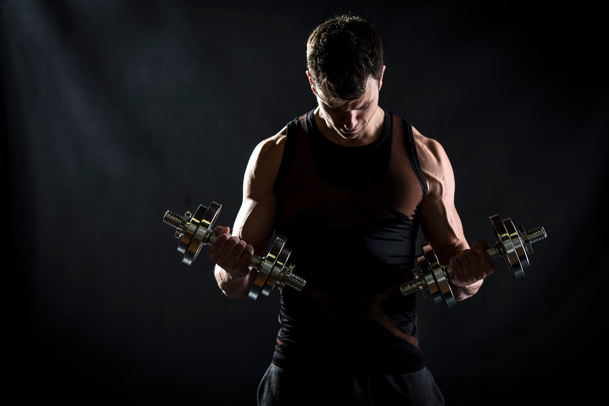
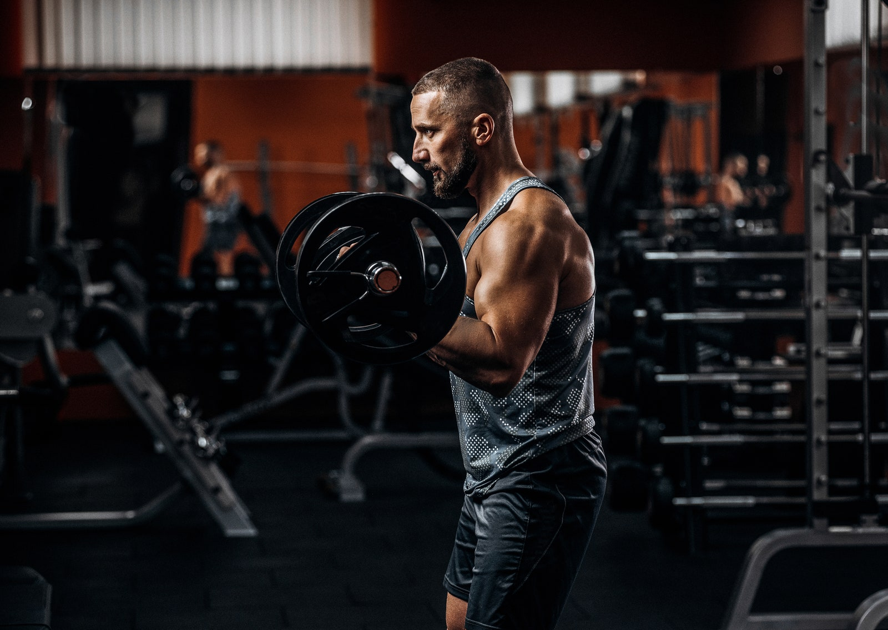

WORKOUT
¿Estás haciendo algo mal al levantar pesas?
8 de septiembre de 2021 | Por Sheril Celada
Tienes dolor en las articulaciones
Es normal tener un poco de dolor cuando haces ejercicio, en especial cuando estás probando algo nuevo aumentaste el peso o las repeticiones, pero el dolor se debe sentir en los músculos y no en las articulaciones. Si eso pasa, esto puede afectar la habilidad de tu cuerpo de entrenar correctamente, además de que aumenta el riesgo de terminar con lesiones.
Estás estancado
El temido “plateau” es ese periodo en el que, incluso cuando estás haciendo ejercicio, dejas de ver resultados, esto se puede deber a que tanto tus levantamientos como tu tiempo y tipo de recuperación son incorrectos. Esto puede ser una señal de que no estás agregando suficiente variedad o intensidad (de acuerdo con los expertos, debes cambiar tu rutina cada 4 o 6 semanas).
No estás cambiando lo suficiente
Esto es similar a la variedad, tienes que hacer cambios, aunque sean pequeños, en la cantidad de repeticiones, intensidad, tipos de ejercicios y hasta en los aparatos que usas. Estar demasiado cómodo con una rutina y hacer siempre lo mismo es la señal más clara de que las cosas no están bien y ya no te estás desafiando a ti mismo.

No estás adolorido
Suena contradictorio, pero el dolor también puede ser un indicador de que estás haciendo el trabajo correcto. Debe ser en los músculos que trabajaste (no en las articulaciones), se trata del DOMS, que puede aparecer de 24 a 48 horas después de un entrenamiento. Si no sientes dolor después de ningún entrenamiento pasan dos cosas, o tienes una capacidad de recuperación brutal, o no estás entrenando tan duro como deberías.
Sientes demasiado dolor
Todo en exceso es malo. Un poco de dolor es una buena señal, pero no debes llegar al punto de no poder moverte al día siguiente, de lo contrario puedes limitar la intensidad con la que tu cuerpo va a poder trabajar en tu siguiente sesión de entrenamiento, además de que puede ser una señal de que no te estás recuperando correctamente.
Estás ganando peso, pero no de lo que quieres
Si estás ganando fuerza, pero estás aumentando de peso en las zonas equivocadas o de grasa entonces esto puede significar que tu rutina de pesas no está al mismo nivel que tu dieta y no estás quemando las calorías que necesitas, o que no estás realizando los ejercicios suficientes que trabajen varios músculos y ayuden a quemar más calorías.